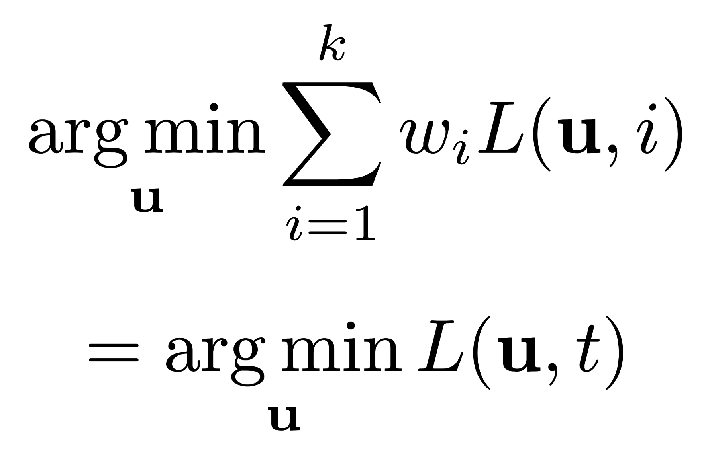
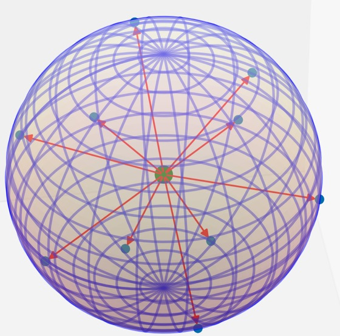
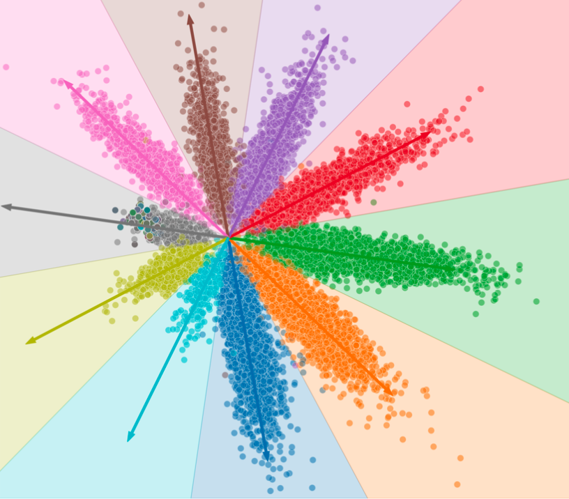
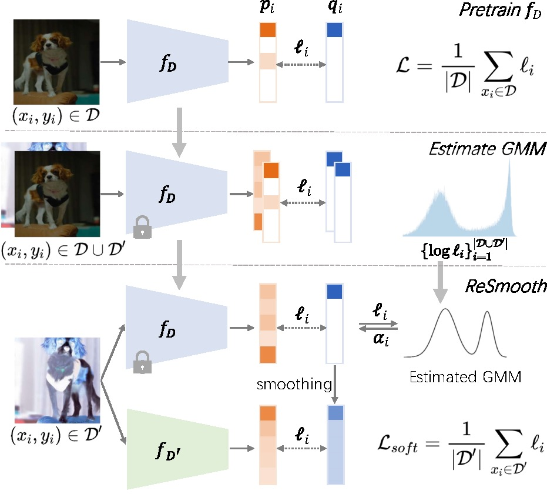
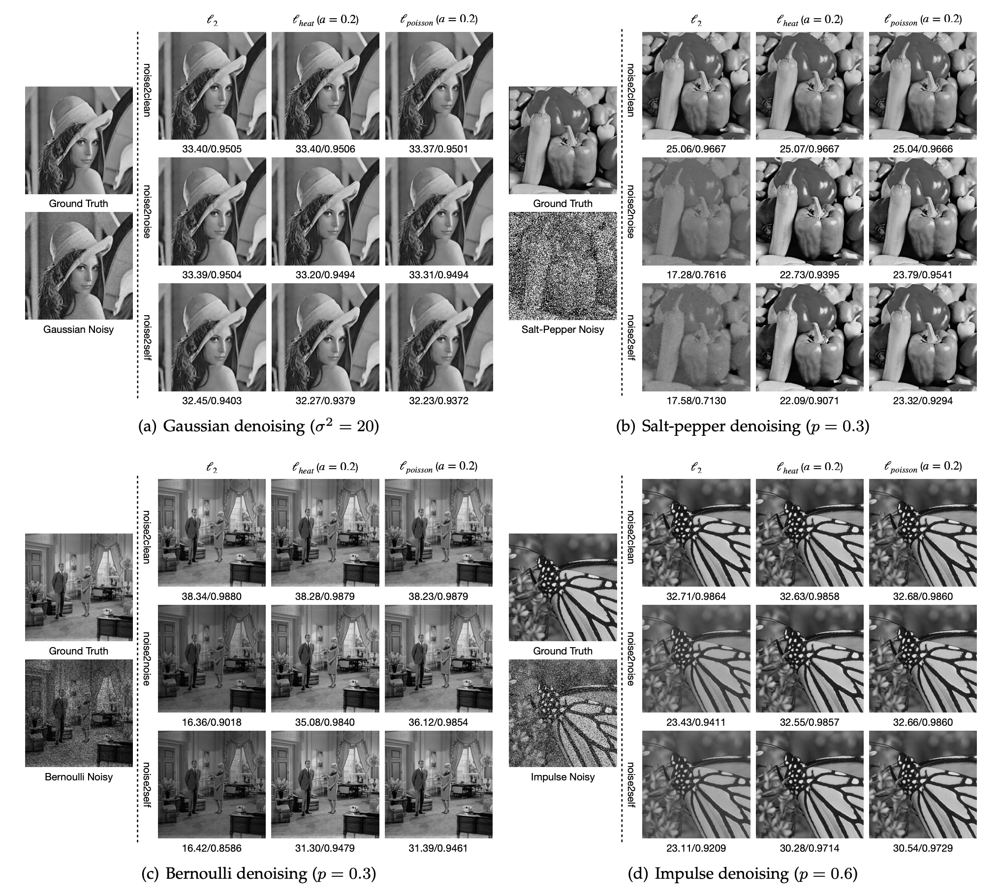

{kind=link}

Learning with Noisy Labels via Sparse Regularization
Xiong Zhou, Xianming Liu*, Chenyang Wang, Deming Zhai, Junjun Jiang, Xiangyang Ji
International Conference on Computer Vision (ICCV) 2021
|
|
|||||||||
| I am a Ph.D. student at Harbin Institute of Technology, advised by Prof. Xianming Liu. I obtained my B.E. from Harbin Institute of Technology. I study image processing, computer vision, and robust machine learning, especially learning with imperfect data. |
Publications
|  | Asymmetric Loss Functions for Learning with Noisy Labels Xiong Zhou, Xianming Liu*, Junjun Jiang, Xin Gao, Xiangyang Ji The 38-th International Conference on Machine Learning (ICML 2021)
|
|
Learning with Noisy Labels via Sparse Regularization Xiong Zhou, Xianming Liu*, Chenyang Wang, Deming Zhai, Junjun Jiang, Xiangyang Ji International Conference on Computer Vision (ICCV) 2021
|
|  | Learning Towards the Largest Margins Xiong Zhou, Xianming Liu*, Deming Zhai, Junjun Jiang, Xin Gao, Xiangyang Ji International Conference on Learning Representations (ICLR) 2022
|
|  | Prototype-anchored Learning for Learning with Imperfect Annotations Xiong Zhou, Xianming Liu*, Deming Zhai, Junjun Jiang, Xin Gao, Xiangyang Ji The 39-th International Conference on Machine Learning (ICML 2022)
|
|  | ReSmooth: Detecting and Utilizing OOD Samples When Training With Data Augmentation Chenyang Wang, Junjun Jiang*, Xiong Zhou, Xianming Liu IEEE Transactions on Neural Networks and Learning Systems (T-NNLS)
|
|  | Asymmetric Loss Functions for Noise-Tolerant Learning: Theory and Applications Xiong Zhou, Xianming Liu*, Deming Zhai, Junjun Jiang, Xiangyang Ji IEEE Transactions on Pattern Analysis and Machine Intelligence (T-PAMI)
|
Service
Reviewer or PC member: ICLR 2022, ICML 2022, NeurIPS 2022, T-PAMI, T-NNLS
Outstanding Reviewer at ICML 2022 (top 10%)
Awards
Tencent Scholarship, 2022
China National Scholarship, 2022
Silver Medal in the 29th Chinese Mathematical Olympiad (CMO)